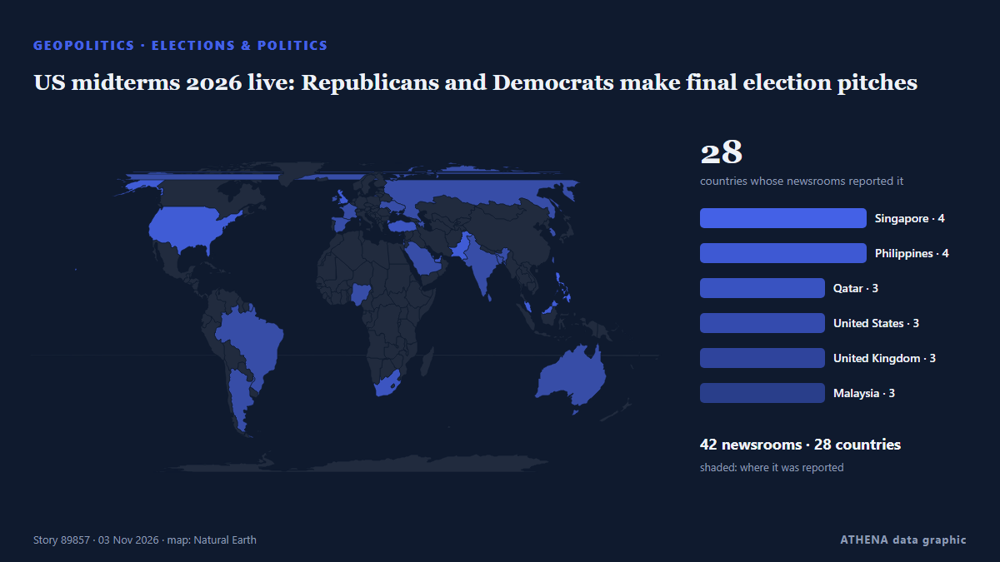

US midterms 2026 live: Republicans and Democrats make final election pitches

Αναφέρθηκε ανεξάρτητα από 42 μέσα σε 28 χώρες από τις 1 Νοε, πρώτο το Al Jazeera English· η κάλυψη εξαπλώνεται ακόμη. Το ATHENA εκτιμά τον κίνδυνο μέτριο (3.5/10), κυρίως λόγω της σοβαρότητάς του και της εμβέλειάς του. Βεβαιότητα 91% (υψηλή): το επιβεβαιώνουν 42 ανεξάρτητα μέσα, μέση αξιοπιστία 75%. Μέσα ανά χώρα: Κατάρ (3), Σιγκαπούρη (3), Φιλιππίνες (3). Κάλυψη: 1 Νοε έως 3 Νοε, 42 ώρες.
Γιατί έχει σημασία: Οι εξελίξεις στην ασφάλεια και τη διπλωματία μπορούν να μετατοπίσουν συμμαχίες, εμπόριο και αγορές πολύ πέρα από τις χώρες που εμπλέκονται.
Τι άλλαξε: 30 νέες αναφορές από 28 μέσα στο 24ωρο έως 3 Νοε.
Πρώτη διατύπωση: US midterms: 2 days to go – what polls say as Trump, El-Sayed hit the trail
Οι τίτλοι των ειδήσεων παρουσιάζονται στα αγγλικά, όπως δημοσιεύτηκαν.
Με μια ματιά
Επιλέγεται, βαθμολογείται και γράφεται από τη δημοσιευμένη μεθοδολογία του ATHENA. Κανένας συντάκτης δεν παρεμβαίνει σε μεμονωμένα γεγονότα. Πώς παράγεται ›
| 01 Nov 08:47 UTC | 1 |
|---|---|
| 01 Nov 10:47 UTC | 1 |
| 01 Nov 12:47 UTC | 2 |
| 01 Nov 14:47 UTC | 0 |
| 01 Nov 16:47 UTC | 3 |
| 01 Nov 18:47 UTC | 2 |
| 01 Nov 20:47 UTC | 0 |
| 01 Nov 22:47 UTC | 1 |
| 02 Nov 00:47 UTC | 1 |
| 02 Nov 02:47 UTC | 0 |
| 02 Nov 04:47 UTC | 6 |
| 02 Nov 06:47 UTC | 2 |
| 02 Nov 08:47 UTC | 1 |
| 02 Nov 10:47 UTC | 1 |
| 02 Nov 12:47 UTC | 4 |
| 02 Nov 14:47 UTC | 6 |
| 02 Nov 16:47 UTC | 4 |
| 02 Nov 18:47 UTC | 0 |
| 02 Nov 20:47 UTC | 0 |
| 02 Nov 22:47 UTC | 1 |
| 03 Nov 00:47 UTC | 3 |
| 03 Nov 02:47 UTC | 3 |
| 03 Nov 04:47 UTC | 5 |
| 01 Nov 09:29 UTC | 0.0 |
|---|---|
| 02 Nov 08:26 UTC | 0.8 |
| 03 Nov 05:01 UTC | 3.4 |
| 03 Nov 06:32 UTC | 3.5 |
Γιατί αυτοί οι αριθμοί
Σημασία
Κίνδυνος
Βεβαιότητα
Η κάλυψη — ποιος το ανέφερε και πότε
ο τίτλος όπως δημοσιεύτηκε · ανοίγει το πρωτότυπο- Al Jazeera English · ΚατάρUS midterms: 2 days to go – Who leads in the polls as Trump rallies
- The Straits Times · ΣιγκαπούρηTrump White House maps path to govern without Congress if Democrats win
- The Rio Times · ΒραζιλίαDemocrats Lead US Midterm Polls and Odds
- Rappler · ΦιλιππίνεςTrump White House maps path to govern without Congress if Democrats win
- Forbes Business · Ηνωμένες ΠολιτείεςTrump Says He May Become ‘Mr. Veto’ If Democrats Win Control Of Congress
- NPR · Ηνωμένες ΠολιτείεςHow to think about the midterms — and the political moment the country is in
- ABC News Australia · ΑυστραλίαEx US spy chiefs say Trump 'willing to go beyond limits' at midterms
- The Hill · Ηνωμένες ΠολιτείεςTrump says he'll become 'Mr. Veto' if Democrats take Congress
- The Independent · Ηνωμένο Βασίλειο'Mr. Veto:' Trump maps a path to govern without Congress if Republicans lose control
- BBC News · Ηνωμένο ΒασίλειοDemocrats have high hopes for midterms - but are the polls right?
- The Straits Times · ΣιγκαπούρηTrump says he may be ‘Mr Veto’ if Democrats win midterms
- Free Malaysia Today · ΜαλαισίαDemocrats, Trump hold final rallies before midterm elections
- Express Tribune · ΠακιστάνUS midterms: Polls show Democrats ahead in battle for Congress
- Cyprus Mail · ΚύπροςTrump prepares to govern without Congress if Democrats win midterms
- IOL · Νότια ΑφρικήDemocrats, Trump hold final rallies before midterm elections
- The Independent · Ηνωμένο Βασίλειο‘Mr. Veto’: Trump maps a path to govern without Congress if Republicans lose control
- CNA (Channel NewsAsia) · ΣιγκαπούρηDemocrats, Trump hold final rallies before midterm elections
- TASS (English) · ΡωσίαWhite House prepares to bypass Congress if Democrats win midterms — media
- The Korea Times · Νότια ΚορέαDemocrats, Trump hold final rallies before midterm elections
- The New Arab · INTDemocrats, Trump hold final rallies before US midterm elections
- NDTV · ΙνδίαTrump Reveals What He Will Do If Democrats Win US Midterm Elections
- ProtoThema English ·Trump claims midterm polls are ‘rigged’ and warns America is ‘finished’ if Democrats win
- AzerNews · ΑζερμπαϊτζάνTrump: I will veto everything if Democrats win
- The Jerusalem Post · ΙσραήλSix reasons Democrats may fall short of midterms landslide despite Trump’s slump - analysis
- Al Jazeera English · ΚατάρUS midterms 2026 live: Trump, Democrats make final push amid Michigan rift
- TRT World · ΤουρκίαRepublicans, Democrats make last-gasp pitches to voters before Tuesday's midterm elections
- FXStreet · ΙσπανίαThe Midterms: How will stock markets react?
- Vanguard · ΝιγηρίαDemocrats, Trump hold final rallies before midterm elections
- Daily Tribune · ΦιλιππίνεςDemocrats, Trump hold final rallies before midterm elections
- France 24 English · ΓαλλίαWhat changes if Democrats win a majority in Congress?
- Taipei Times · ΤαϊβάνDemocrats, Trump hold final rallies
- Ada Derana · Σρι ΛάνκαTrump says he'll become 'Mr Veto' if Democrats win US midterm elections
- Al Jazeera English · ΚατάρTrump, Vance campaign with candidates on last day before US midterms
- Kyiv Post · ΟυκρανίαDemocrats, Trump Hold Final Rallies Before Midterm Elections
- Buenos Aires Times · ΑργεντινήDemocrats, Trump hold final rallies before midterm elections
- Arab News · Σαουδική ΑραβίαTensions rise as midterm campaign ends with control of Congress at stake
- BusinessWorld · ΦιλιππίνεςTensions rise as midterm campaign ends with control of Congress at stake
- New Straits Times · ΜαλαισίαUS midterms could weaken Trump's grip on power as Democrats target Congress
- Dawn · ΠακιστάνPolls open on US east coast in midterm elections that could weaken Trump’s hold on Washington
- RTÉ News · ΙρλανδίαUS midterms set to deliver verdict on Trump presidency